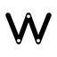

App/Product Developer
If it bugs me twice, I build something.
Each one started as a small annoyance. Now it's a tool I actually use.

One person. Answers email.
The work
About me
This is the whole catalog, not the highlights.
Everything I build ends up on this page at whatever stage it's honestly at — released, in beta, or still rough enough that I'll say so. I'd rather show three things properly labelled than ten with the broken parts cropped out. What's here will look different in a year; that's rather the point of calling it a workshop instead of a portfolio.